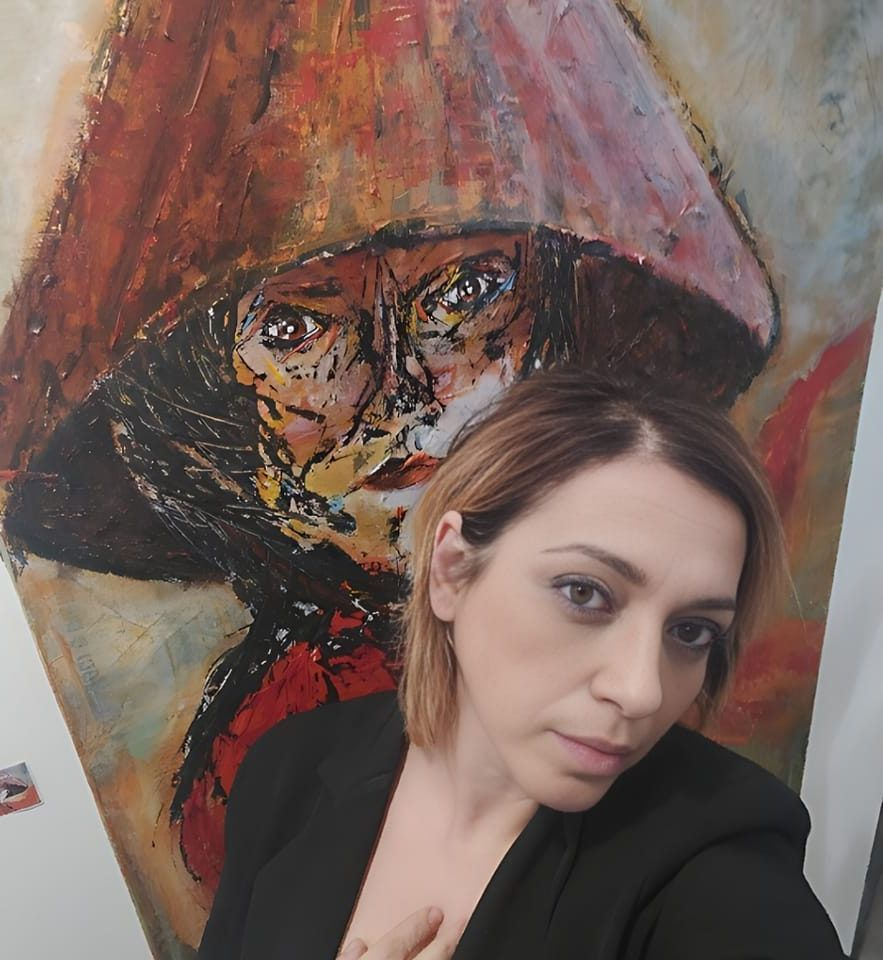

Anna Cristino, pittrice a Bari
Pittrice pugliese, dipinge acrilici su tela con la spatola e con le mani. La donna è il centro della sua pittura, il rosso una presenza costante.

- Nata a
- San Severo (Foggia), 1964
- Vive a
- Bari
- Tecnica
- Acrilico su tela, con spatola e con le mani
- Soggetto
- La donna: forza interiore, resilienza, bellezza
- Tele
- Oltre 200 in acrilico
- Prima mostra
- 2018
Chi è Anna Cristino
Anna Cristino è un’artista pugliese, nata a San Severo, in provincia di Foggia, nel 1964. Vive a Bari. Ha scoperto la pittura da bambina, guardando lavorare il padre, disegnatore, da cui eredita la passione per il disegno. Ha fatto studi classici e si è laureata in campo medico, senza mai smettere di coltivare l’arte: la passione c’è da sempre, nonostante la quotidianità porti talvolta verso altre priorità.
La formazione
È autodidatta: ha studiato arte figurativa e seguito corsi di ritrattistica e di pittura, senza passare da un’accademia. A Bari ha acquisito grande dimestichezza con la spatola, che chiama la sua «arma del cuore».
La tecnica: acrilico, spatola e mani
Dipinge con le mani e con la spatola, a strati densi di acrilico, fino a rendere il colore materico e quasi pulsante. Il rosso è una presenza costante. Finora ha realizzato oltre 200 tele in acrilico.
I temi: la donna, i sentimenti, il mare
Al centro c’è la donna, vista come simbolo di forza interiore, resilienza e bellezza. Le sue tele raccontano anche le emozioni, con tratti umani: la paura, l’innocenza, la passione e il dono. Il tema si estende alle marine e agli astratti, dove rappresenta innamoramenti, distanze, riflessioni ed esplosioni dell’anima.
La pittura come «culla d’Amore»
Per Anna Cristino la pittura è un abbraccio emotivo e sensoriale per chi guarda l’opera e vi si riconosce. Nelle sue parole: «Perdermi tra barattoli di colori, pennelli e spatole ed immergermi nel mio mondo, dove ogni sfumatura, anche la più debole, è fonte di vita.»
Ombra e luce su semplici tele bianche
«Credo ferventemente che seguire i propri sogni sia la miglior linfa vitale.»
Anna Cristino
Dall’esperienza di ogni giorno, Anna Cristino ha imparato a cogliere ogni sorriso, lacrima, particolare, ombra e luce in tutto ciò che la circonda, per poi dar loro vita su semplici tele bianche.
Vedi le opere di Anna Cristino
Le opereVieni a vedere le tele dal vivo
Per visite, opere e informazioni chiama la galleria o scrivi all’artista. Gli orari di apertura non sono ancora indicati.